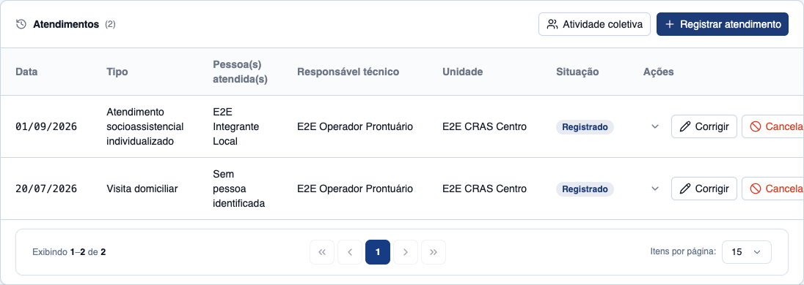
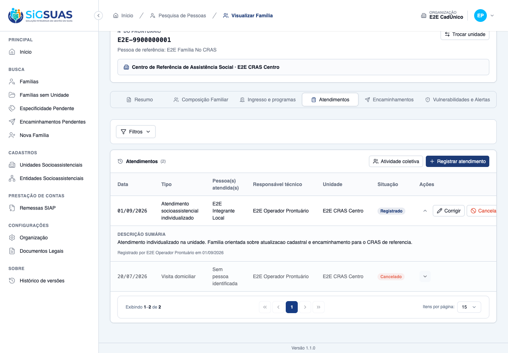
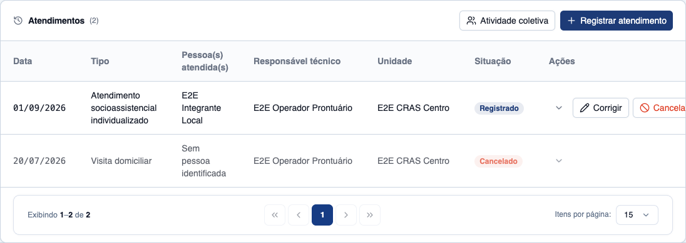
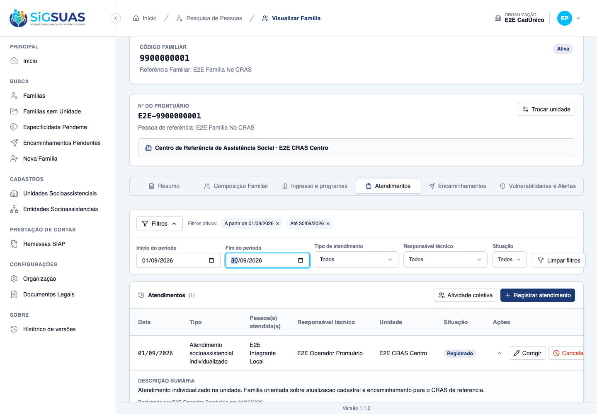
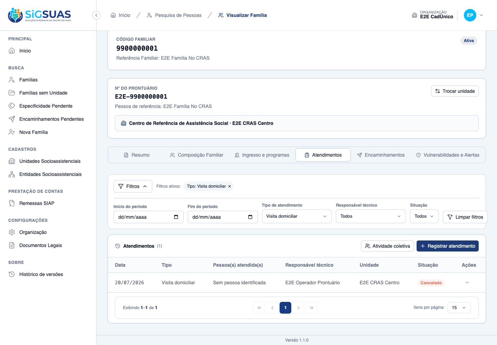
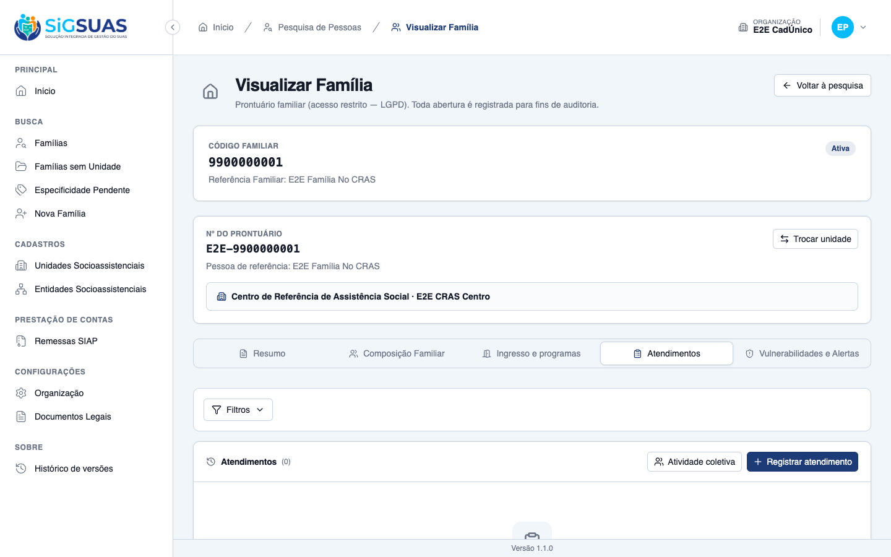

Critérios de Aceite — HU #10710
Resumo
10 critérios, mais 3 derivados na spec. 7 evidenciados no navegador dirigindo o Painel do Tenant, 3 de forma combinada e 3 pela suíte. Esta HU é somente leitura: nenhum atendimento é criado, corrigido ou cancelado por ela. Complemento de 04/09/2026: o detalhe do atendimento (CA03) e os filtros de período e tipo (CA05 e CA06), que antes tinham prova apenas de contrato e de componente, passaram a ser evidenciados na tela.
| CA | Critério | Status |
|---|---|---|
| CA01 | Histórico em ordem cronológica | ATENDIDO · navegador |
| CA02 | Lançamento retroativo aparece na posição cronológica | ATENDIDO · navegador |
| CA03 | Abrir o atendimento mostra a descrição | ATENDIDO · navegador + automatizado |
| CA04 | Atendimento cancelado permanece visível | ATENDIDO · navegador |
| CA05 | Filtrar por período | ATENDIDO · navegador + automatizado |
| CA06 | Filtrar por tipo | ATENDIDO · navegador + automatizado |
| CA07 | Atendimentos de unidades diferentes | ATENDIDO · automatizado |
| CA08 | Família sem atendimento registrado | ATENDIDO · navegador |
| CA09 | Negativa por unidade declara o motivo | ATENDIDO · navegador |
| CA10 | Isolamento entre municípios | ATENDIDO · automatizado |
| CA01b | Paginação estável com vários atendimentos no mesmo dia | ATENDIDO · automatizado |
| CA06b | Tipo inativado continua filtrável | ATENDIDO · automatizado |
| CA11 | A consulta não gera auditoria própria | ATENDIDO · navegador + automatizado |
CA01 — Histórico em ordem cronológica ATENDIDO · navegador
Critério (Gherkin): Dado que a família tem atendimentos registrados Quando eu abrir o histórico de atendimentos no prontuário Então vejo os atendimentos do mais recente para o mais antigo pela data do atendimento E cada linha apresenta data, tipo, pessoa atendida quando houver, responsável técnico e unidade
Como foi testado: Aba Atendimentos no prontuário da família …f0001.
- A tabela lista do mais recente ao mais antigo <b>pela data do atendimento</b>.
- Cada linha traz data, tipo, pessoa (ou “Sem pessoa identificada”), responsável e unidade.
- É <b>tabela</b>, não linha do tempo — o molde do histórico da composição familiar.

CA02 — Lançamento retroativo aparece na posição cronológica ATENDIDO · navegador
Critério (Gherkin): Dado que um atendimento de 05/07/2026 foi lançado em 20/08/2026 Quando eu consultar o histórico Então ele aparece entre os atendimentos de julho, não no topo da lista
Como foi testado: O atendimento de 20/07/2026 foi lançado hoje, 01/09/2026, depois do de 01/09.
- A ordem exibida é <code>01/09/2026</code> e depois <code>20/07/2026</code>: o retroativo aparece <b>abaixo</b>, na posição cronológica.
- A ordenação é por <code>attended_on</code>, não por data de lançamento.
CA03 — Abrir o atendimento mostra a descrição ATENDIDO · navegador + automatizado
Critério (Gherkin): Dado que estou no histórico da família Quando eu abrir um atendimento Então vejo a descrição sumária registrada E o autor do registro, além do responsável técnico
Como foi testado: Complemento de 04/09/2026, dirigido no Painel do Tenant como Operacional com add-on LGPD: na aba Atendimentos do prontuário, abrir o atendimento de 01/09/2026 pelo botão de detalhes da linha. Complementado por teste de componente do painel expandido.
- O painel expandido exibe o bloco <b>DESCRIÇÃO SUMÁRIA</b> com o texto registrado: “Atendimento individualizado na unidade. Familia orientada sobre atualizacao cadastral e encaminhamento para o CRAS de referencia.”
- Logo abaixo consta o <b>autor do registro</b> e a data do lançamento: “Registrado por E2E Operador Prontuário em 01/09/2026”.
- O <b>responsável técnico</b> permanece visível na própria linha do histórico, ao lado da unidade — os três dados que o critério pede aparecem juntos.
- Expandir não dispara requisição: a descrição já vem no payload da listagem. O corte de acesso foi decidido na abertura do prontuário; esconder atrás de um segundo endpoint não protegeria nada.

CA04 — Atendimento cancelado permanece visível ATENDIDO · navegador
Critério (Gherkin): Dado que um atendimento da família foi cancelado Quando eu consultar o histórico Então ele aparece marcado como cancelado, com o motivo e o autor do cancelamento
Como foi testado: Histórico após o cancelamento do atendimento de 20/07/2026.
- A linha continua na tabela, com marcação de <b>cancelado</b>.
- No banco, <code>deleted_at = NULL</code> — o registro não foi apagado, apenas mudou de estado.
- Some da apuração, não do histórico.

CA05 — Filtrar por período ATENDIDO · navegador + automatizado
Critério (Gherkin): Dado que a família tem atendimentos de 2025 e de 2026 Quando eu filtrar pelo período de agosto de 2026 Então vejo apenas os atendimentos daquele mês
Como foi testado: Complemento de 04/09/2026: no painel Filtros da aba Atendimentos, informar o período de 01/09/2026 a 30/09/2026 e observar a lista e o contador. Complementado pela suíte (attended_on_from/to) e por teste de componente.
- Com o período de setembro aplicado, o contador do cabeçalho cai de <b>(2)</b> para <b>(1)</b> e resta apenas o atendimento de 01/09/2026 — o de 20/07/2026 sai da lista.
- Ao limpar o período, a lista volta a <b>(2)</b> — o filtro não é destrutivo.
- O período é intervalo de datas, com dois campos de data — não seletor exercício+mês.
- Período invertido é barrado na tela, sem disparar consulta inválida em laço, e o backend recusa (<code>it rejects an inverted period</code>).

CA06 — Filtrar por tipo ATENDIDO · navegador + automatizado
Critério (Gherkin): Dado que quero saber quantas visitas domiciliares a família recebeu Quando eu filtrar pelo tipo "Visita Domiciliar" Então vejo apenas os atendimentos desse tipo
Como foi testado: Complemento de 04/09/2026: no painel Filtros, escolher o tipo Visita domiciliar e observar a lista e o contador. Complementado pela suíte e por teste de componente.
- Com o tipo “Visita domiciliar” aplicado, o contador vai para <b>(1)</b> e resta apenas o atendimento de 20/07/2026 desse tipo.
- As opções do filtro são a união dos tipos ativos com os presentes no histórico — um tipo inativado depois continua filtrável (CA06b).
- O filtro de responsável é derivado apenas do histórico carregado — limitação documentada no componente.

CA07 — Atendimentos de unidades diferentes ATENDIDO · automatizado
Critério (Gherkin): Dado que a família foi atendida pelo "CRAS Centro" e, em outro período, pelo "CREAS" Quando eu consultar o histórico Então vejo os atendimentos das duas unidades E cada linha identifica a unidade que realizou o atendimento
Como foi testado: Coberto pela suíte: a listagem não recorta por unidade do usuário.
- O corte de acesso é <b>do prontuário</b>, decidido uma vez na abertura — não por linha.
- Filtrar por unidade dentro da lista produziria histórico mutilado, pior que negar o acesso inteiro.
Evidência por cobertura automatizada — ver Anexo.
CA08 — Família sem atendimento registrado ATENDIDO · navegador
Critério (Gherkin): Dado que o prontuário da família foi aberto e nenhum atendimento foi registrado Quando eu consultar o histórico Então a tela informa que ainda não há atendimentos registrados E oferece a ação de registrar o primeiro
Como foi testado: Aba Atendimentos antes de qualquer registro.
- <i>“Ainda não há atendimentos registrados”</i> com a ação <b>Registrar o primeiro atendimento</b>.
- É estado distinto de “nenhum resultado para o filtro”, que oferece limpar o filtro.

CA09 — Negativa por unidade declara o motivo ATENDIDO · navegador
Critério (Gherkin): Dado que sou Operacional do Tenant lotado apenas no "CRAS Centro" E que a família é referenciada no "CREAS" Quando eu tentar consultar o histórico dela Então o histórico não é apresentado E a tela informa que a família é referenciada em unidade onde não tenho lotação vigente, orientando procurar o gestor Master
Como foi testado: Acesso ao prontuário da família …f0002.
- A tela declara o motivo e orienta procurar o gestor Master.
- <b>Não nomeia a unidade</b> — confirmado por varredura: “CREAS” não aparece na página.

CA10 — Isolamento entre municípios ATENDIDO · automatizado
Critério (Gherkin): Dado que sou usuário do município A Quando eu consultar o histórico de atendimentos Então alcanço somente prontuários do município A
Como foi testado: Coberto por AttendanceIsolationTest.
- Prontuário de outra organização devolve <b>404</b>, idêntico ao de uuid inexistente.
Evidência por cobertura automatizada — ver Anexo.
CA01b — Paginação estável com vários atendimentos no mesmo dia ATENDIDO · automatizado
Critério (Gherkin): Dado que uma oficina gerou cinco atendimentos na mesma data Quando eu avançar para a segunda página Então nenhum atendimento se repete E nenhum é pulado
Como foi testado: Coberto pela suíte, com cinco linhas de mesma data servidas em três páginas.
- A ordenação é <code>attended_on DESC, created_at DESC, id DESC</code>.
- Um teste-irmão prova que remover qualquer um dos desempates <b>quebra</b> a ordem — verificado por reversão do predicado, não por leitura.
Evidência por cobertura automatizada — ver Anexo.
CA06b — Tipo inativado continua filtrável ATENDIDO · automatizado
Critério (Gherkin): Dado que o tipo "Outros" foi inativado no Painel Global Quando eu filtrar o histórico por "Outros" Então os atendimentos anteriores continuam sendo exibidos
Como foi testado: Coberto pela suíte e por teste de componente.
- A listagem <b>nunca</b> filtra por <code>attendance_types.is_active</code> — inativar um tipo não pode apagar o passado.
Evidência por cobertura automatizada — ver Anexo.
CA11 — A consulta não gera auditoria própria ATENDIDO · navegador + automatizado
Critério (Gherkin): Dado que abri o prontuário e naveguei pelo histórico, mudando filtros e páginas Quando eu consultar a trilha de auditoria Então consta UM registro de abertura de prontuário E nenhum registro por listagem, filtro ou paginação
Como foi testado: Varredura do activity_log após navegar pelo histórico, e teste que compara a contagem antes/depois de listar, filtrar e paginar.
- Os 4 registros de <code>attendance</code> na trilha vieram todos de <b>escrita</b> (registrar e cancelar) — nenhum de leitura.
- A abertura do prontuário já grava a trilha LGPD; auditar listagem inundaria o log e tornaria inútil o registro que a lei exige.
Evidência por cobertura automatizada — ver Anexo.
Observações e ressalvas
Somente leitura, por desenho
Esta HU não altera nada: registrar, corrigir e cancelar são da #10709. Os prints deste dossiê mostram a mesma aba, mas o que se evidencia aqui é a apresentação — ordem, marcação do cancelado, estados vazios e a negativa de acesso.
O que os filtros conseguem e o que não conseguem
As opções do filtro de tipo são a união dos tipos ativos com os presentes no histórico, o que preserva o tipo inativado (CA06b). Já as de responsável vêm apenas das linhas carregadas, porque o endpoint de opções só devolve responsáveis quando recebe uma unidade — limitação registrada no componente e levada ao PO, não escondida.
Complemento de 04/09/2026 — três critérios saíram do apêndice para a tela
Na geração original, CA03, CA05 e CA06 estavam apoiados em teste de componente e na suíte de backend. O teste de componente roda em outra ferramenta e não entra no apêndice deste dossiê, de modo que o leitor via a afirmação sem poder conferi-la. Os três foram então dirigidos na tela, com o ambiente já de pé: o detalhe do atendimento mostrando descrição e autor, e os dois filtros reduzindo o contador do cabeçalho de forma observável. Os filtros foram limpos ao final e nenhum dado do ambiente foi alterado — esta HU é somente leitura.Anexo — Cobertura automatizada (Pest — filtro Attendance: 139 testes; SyncPermissions: 14; todos verdes)
PASS Tests\Unit\Models\AttendancePersonTest ✓ it is tenant-scoped, soft-deletable, uuid-routed and audited 0.62s ✓ it audits ONLY ids — no name, no text (§6.2) 0.02s ✓ it keeps person_id coherent with the family member (P-A) and blocks… 0.23s PASS Tests\Unit\Models\AttendanceTest ✓ it is tenant-scoped, soft-deletable, uuid-routed and audited 0.03s ✓ it casts attended_on as date and status as the AttendanceStatus enu… 0.04s ✓ it configures the activity log with ONLY the structured fields — ne… 0.03s ✓ it reports isCancelled by STATUS, with deleted_at untouched (RN09) 0.04s PASS Tests\Unit\Models\AttendanceTypeTest ✓ it has correct fillable, casts and defaults 0.02s ✓ it uses soft deletes, HasUuid, LogsActivity and resolves by uuid 0.02s ✓ it is a GLOBAL lookup — never tenant-scoped (RN04/RN10) 0.03s ✓ it has no global scope of is_active — history and remittance never… 0.04s ✓ it keeps the remittance rule as data, cast to the enum (RN03/D03) 0.02s ✓ it accepts NULL as a legitimate remittance counter value (CA03) 0.02s ✓ it enforces unique code — even against soft-deleted rows (RN02) 0.02s ✓ it configures the activity log with the audited fields (RN07/§14) 0.02s PASS Tests\Feature\Api\AttendanceTypeControllerTest ✓ it lists attendance types exposing uuid and the remittance rule — n… 0.09s ✓ it shows the remittance counter with its label (CA02) 0.03s ✓ it shows NULL counter as an explicit "no specific counter" label (C… 0.03s ✓ it creates an attendance type with the code informed by the admin (… 0.05s ✓ it rejects a duplicate code (CA04) 0.04s ✓ it requires code and name — the code is never generated (CA04) 0.03s ✓ it rejects a remittance counter outside the enum 0.03s ✓ it audits the change of the remittance rule with old and new values… 0.04s ✓ it exposes the audit trail with causer and pagination (CA09) 0.04s ✓ it soft deletes an attendance type 0.05s ✓ it bulk deactivates and bulk activates attendance types, logging th… 0.03s ✓ it filters actives for the new-entry select, and returns inactives… 0.03s ✓ it filters by remittance_counter 0.02s ✓ it blocks write without permission 0.03s ✓ it refuses to delete a type in use with 422, guiding deactivation (… 0.03s ✓ it still soft deletes a type NOT referenced by any consumer (CA05) 0.03s ✓ it refuses to delete a type referenced by a REAL attendance — the p… 0.04s ✓ it blocks the bulk destroy through the REAL production consumer too… 0.04s ✓ it ignores a registered consumer whose table does not exist yet (D0… 0.03s ✓ it bulk destroy is ATOMIC: one item in use blocks all and is identi… 0.03s ✓ it rejects soft-deleted uuids in every bulk action at validation ti… 0.04s ✓ it bulk destroys unused types, logging the bulk event with author (… 0.04s ✓ it gives the admin_operador read-only access — every write is 403 (… 1.54s ✓ it lets the ADMIN role exercise all eight abilities end to end 1.42s ✓ it rejects client-guard tokens on every write route with 401, creat… 0.04s ✓ it keeps the shared read alive for the client guard — the tenant se… 0.03s PASS Tests\Feature\Api\Client\AttendanceControllerTest ✓ it registers an individual attendance with person, responsible and… 0.14s ✓ it registers a family-level attendance with NO person — zero pivot… 0.08s ✓ it refuses a future date (CA03/RN04) 0.08s ✓ it accepts TODAY at 23h in the app timezone — the boundary never re… 0.09s ✓ it saves a retroactive attendance in a remitted month AND returns t… 0.09s ✓ it does NOT warn when the month remittance is pending or failed (CA… 0.08s ✓ it refuses a person from ANOTHER family and an UNLINKED member (CA0… 0.10s ✓ it refuses the SAME person twice in one attendance (§6.2) 0.08s ✓ it derives person_id from the family member and never accepts it fr… 0.08s ✓ it records the responsible professional apart from the author, and… 0.09s ✓ it refuses a responsible whose assignment only started AFTER the at… 0.09s ✓ it refuses a unit where the operational user has NO assignment on t… 0.08s ✓ it lets the MASTER register in any unit of the tenant, without assi… 0.08s ✓ it corrects the attendance type in place (CA09/RN08) 0.09s ✓ it revalidates the WHOLE trio on edit: changing only the date inval… 0.09s ✓ it syncs people on edit per model: adds and removes without sync()… 0.12s ✓ it warns for BOTH the old and the new month when a remitted attenda… 0.11s ✓ it cancels with reason, preserving the row and leaving the counters… 0.11s ✓ it refuses to EDIT a cancelled attendance — cancelled is terminal (… 0.10s ✓ it requires the cancel reason (CA11/RN09) 0.08s ✓ it warns about the generated remittance ALSO on cancellation (CA11b… 0.08s ✓ it refuses to register for a family WITHOUT a reference unit — 422… 0.08s ✓ it keeps social_unit_id as a SNAPSHOT: transferring the family does… 0.08s ✓ it registers ONE independent attendance per family in the batch (CA… 0.10s ✓ it writes NOTHING when ONE family of the batch is invalid — and ide… 0.08s ✓ it treats a family of ANOTHER tenant in the batch as not found — wi… 0.09s ✓ it rejects people in the batch — collective activity does not ident… 0.07s ✓ it serves units, responsibles, ACTIVE types and the month warning t… 0.09s PASS Tests\Feature\Api\Client\AttendanceIndexTest ✓ it lists attendances chronologically by attended_on, newest first,… 0.09s ✓ it breaks same-day ties by created_at DESC then id DESC — the order… 0.08s ✓ it paginates stably when a batch put five attendances on the same d… 0.09s ✓ it places a retroactive entry in its chronological position, not at… 0.07s ✓ it keeps the cancelled attendance visible, marked, with reason and… 0.08s ✓ it filters by period on the attendance date (CA05/RN04) 0.08s ✓ it rejects an inverted period (to before from) 0.07s ✓ it filters by attendance type (CA06) 0.07s ✓ it keeps attendances of a deactivated type visible AND filterable (… 0.08s ✓ it filters by responsible professional (RN04) 0.07s ✓ it filters by status when the user asks — never by default (RN03) 0.08s ✓ it shows attendances from EVERY unit, identified per line, even whe… 0.08s ✓ it refuses a sort parameter — chronological order is the instrument… 0.08s ✓ it denies the history with the same record cut, naming the reason b… 0.10s ✓ it treats a family from another tenant as nonexistent (CA10/RN09) 0.08s ✓ it writes ZERO activity_log rows for listing, filtering and paginat… 0.09s ✓ it runs a constant number of queries regardless of how many attenda… 0.11s ✓ it keeps the attended person on the line after the family member li… 0.08s PASS Tests\Feature\Api\Client\AttendanceReportTest ✓ it derives the four counters per unit and the total includes types… 0.09s ✓ it declares the unavailable counters in the payload — value null, a… 0.08s ✓ it excludes cancelled attendances from the report while they remain… 0.09s ✓ it counts a retroactive attendance in the month it happened, not th… 0.09s ✓ it reflects a type correction on the next query and stores nothing… 0.10s ✓ it reports attendances without an identified person separately, via… 0.08s ✓ it scopes the Operacional to units with an assignment in force TODA… 0.09s ✓ it shows the master every unit of the tenant, and a unit without mo… 0.07s ✓ it never leaks citizen data in the serialized payload — no name, no… 0.08s ✓ it keeps counting past attendances of a type inactivated in the Glo… 0.07s ✓ it narrows the report to a single unit when social_unit_uuid is giv… 0.07s ✓ it keeps unit_count at the Operacional full scope when filtering on… 0.09s ✓ it rejects with a named 422 a unit outside the user scope — never a… 0.08s ✓ it rejects an out-of-range reference month with the SIAP named mess… 0.09s ✓ it denies the Operacional without the manual grant — the restricted… 0.10s ✓ it denies a granted user without an ACTIVE professional bond in the… 0.10s PASS Tests\Feature\Console\SyncPermissionsTest ✓ it keeps attendance-types write abilities out of the client guard r… 1.47s ✓ it grants the Operacional Global read-only access to attendance typ… 1.47s ✓ it keeps attendance-reports.view out of the default CLIENT_OPERADOR… 1.47s PASS Tests\Feature\Dashboard\AttendanceTest ✓ it returns two contiguous 12-point series from source_registered_at… 0.12s ✓ it counts a family in different months across the two independent s… 0.06s ✓ it excludes families with a null date from the respective series (C… 0.06s ✓ it matches the Painel 2 monthly evolution point by point (RN07) 0.08s ✓ it recalculates for a neighborhood, covering only geocoded families… 0.07s ✓ it returns two 12-point zero series when the scope has no families… 0.05s ✓ it returns 422 for a neighborhood_uuid outside the tenant municipal… 0.05s ✓ it denies the panel to the base operator without the dedicated role 0.05s ✓ it grants the panel to the Master without any add-on role 0.05s PASS Tests\Feature\Family\AttendanceAuditTest ✓ it NEVER leaks the description nor the cancel reason into the activ… 0.09s ✓ it never echoes the description in validation messages nor in denia… 0.11s ✓ it audits people changes per model — created and deleted events wit… 0.10s PASS Tests\Feature\Seeders\AttendanceTypeSeederTest ✓ it seeds the eight attendance types of the instrument — codes 1..7… 0.03s ✓ it carries the remittance rule of RN03 as data — three counters, fi… 0.03s ✓ it is idempotent — running the seeder twice does not duplicate nor… 0.03s PASS Tests\Feature\Services\AttendanceEligibilityServiceTest ✓ it lists for the operational user only the units with an assignment… 0.06s ✓ it includes the unit whose assignment STARTS exactly on the date an… 0.05s ✓ it returns no unit for an operational user whose professional link… 0.04s ✓ it lets the Master select ALL non-deleted units of the tenant, with… 0.05s ✓ it answers canRegisterInUnit per unit and date for the operational… 0.05s ✓ it lists as selectable responsibles only professionals assigned to… 0.06s ✓ it orders selectable responsibles deterministically by the user nam… 0.05s ✓ it keeps an INACTIVE professional eligible as responsible for a ret… 0.04s ✓ it answers isResponsibleEligible on the [start, end) boundaries and… 0.05s PASS Tests\Feature\TenantIsolation\AttendanceIsolationTest ✓ it answers 404 for a family of ANOTHER tenant with the SAME body as… 0.09s ✓ it answers 404 when the attendance belongs to ANOTHER family — scop… 0.09s ✓ it answers 403 unit_not_assigned for a family of another unit — WIT… 0.09s ✓ it answers 403 no_active_assignment when the professional has no as… 0.08s ✓ it answers 403 for the operator WITHOUT the LGPD add-on — the class… 0.09s ✓ it scopes attendances by tenant through the BelongsToTenant global… 0.08s PASS Tests\Feature\TenantIsolation\AttendanceReportIsolationTest ✓ it shows the tenant A master only tenant A units and numbers (CA12/… 0.07s ✓ it rejects a tenant B unit used as filter with the same named 422 —… 0.07s PASS Tests\Feature\TenantIsolation\DashboardAttendanceIsolationTest ✓ it never counts families from another tenant in the attendance pane… 0.06s Tests: 139 passed (700 assertions) Duration: 18.03s ===== SyncPermissionsTest (CA15 — contrato da permissão) ===== PASS Tests\Feature\Console\SyncPermissionsTest ✓ it extracts the can: abilities declared by controllers from the rou… 0.63s ✓ it keeps full parity with the previous hardcoded permission set (no… 0.03s ✓ it seeds permissions for both guards and assigns them to roles 1.42s ✓ it runs permissions:sync idempotently without duplicating permissio… 2.45s ✓ it prunes orphan permissions not present in the registry 2.62s ✓ it does not write anything on --dry-run 0.10s ✓ it does not assign RESTRICTED_PERMISSIONS to any role 1.34s ✓ it permissions:sync --coverage fails when an authenticated route ha… 1.36s ✓ it never mirrors any platform-versions ability into the client guar… 1.36s ✓ it never mirrors any cbo-access-profiles ability into the client gu… 1.34s ✓ it grants the Operacional Global read-only access to the CBO map (H… 1.40s ✓ it keeps attendance-types write abilities out of the client guard r… 1.48s ✓ it grants the Operacional Global read-only access to attendance typ… 1.31s ✓ it keeps attendance-reports.view out of the default CLIENT_OPERADOR… 1.37s Tests: 14 passed (119 assertions) Duration: 18.83s